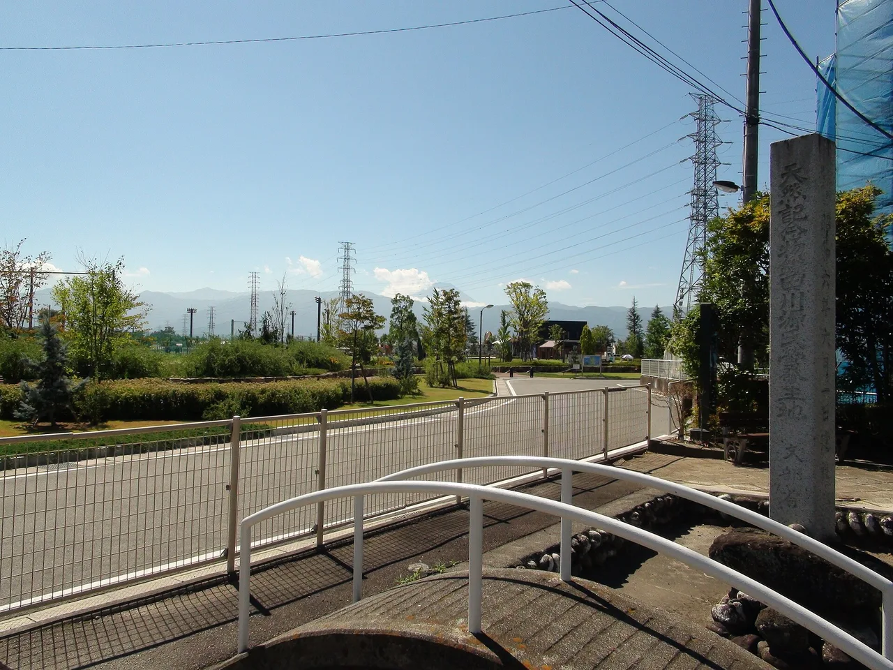

Why do Japanese fireflies glow?
Every June, Japan's rivers and rice paddies turn gold for a few weeks. Thousands of fireflies — hotaru (ホタル) — pulse in the dusk, some even synchronising their flashes into a single slow heartbeat of light. Humans have watched this for over a thousand years. The science of why it happens was only worked out in the twentieth century, and the answer is stranger and more elegant than most people expect. This is the real chemistry of bioluminescence, told through Japan's two firefly species. (The Japanese words are included throughout.)

Light without heat — the chemistry that makes it possible
A candle flame converts about 5% of its energy into visible light; the rest becomes heat you can feel. A firefly converts roughly 95% of its chemical energy directly into light, with almost no waste heat at all. That is why you can hold a firefly in your palm and feel nothing warm. Biologists call this cold light — and understanding it starts with a single molecule.
Luciferin + luciferase + ATP = light
発光 — hakkō (light emission) · 生物発光 — seibutsu hakkō (bioluminescence)
Inside each light organ, the firefly holds a small molecule called luciferin. When the firefly opens tiny air tubes into the organ, oxygen rushes in. An enzyme called luciferase catalyses a reaction between luciferin, oxygen, and ATP (the cell's energy currency), producing an excited molecule called oxyluciferin. The oxyluciferin immediately drops to a lower energy state and releases the difference as a single photon of light. The colour — yellow-green, around 550–570 nm — is set by the shape of the luciferase enzyme, not by the luciferin itself. Change the enzyme slightly and you change the colour. This is why different species flash subtly different hues, and why synthetic "reporter" versions of luciferase are now used everywhere in molecular biology labs to track gene activity inside living cells.
ゲンジボタル and ヘイケボタル: a tale of two rivers
源氏蛍 — Genji-botaru (Nipponoluciola cruciata) · 平家蛍 — Heike-botaru (Aquatica lateralis)
Japan has around 50 firefly species, but two dominate the June riverbanks. The Genji firefly (Nipponoluciola cruciata, long known as Luciola cruciata and still listed that way in most older sources) is the larger of the two, named after the Genji clan of the Heian epic The Tale of Genji. Its larvae live in clean, slow-flowing rivers and streams, and the adults are the fireflies most people picture: large, bright, appearing in great numbers along wooded watercourses. The Heike firefly (Aquatica lateralis, formerly Luciola lateralis) is smaller and dimmer, named after the rival Heike clan. Its larvae live in rice paddies and marshy ground rather than running streams, making it more common in agricultural lowlands. The two species name-check the two sides of a twelfth-century civil war — a piece of cultural history embedded in the taxonomy of light.
Why Genji fireflies synchronise
明滅 — meimetsu (flashing / blinking) · 同調 — dōchō (synchronisation)
Firefly flashes are not random: they are coded signals. The Genji firefly produces a slow, rhythmic 2–4 second pulse — males advertise from flight, females answer from vegetation. What makes large aggregations extraordinary is that the males begin to synchronise (dōchō) with each other, producing waves of light that roll through a stand of riverside trees. The mechanism is not fully understood, but fireflies appear to adjust their own flash rhythm slightly toward their neighbours' rhythm with each cycle, so the group converges over several minutes into a single communal pulse. The Heike firefly, being a smaller, more solitary paddy-dweller, does not synchronise in the same way — its flashes remain individual and scattered across the darkening field.
The original purpose: finding a mate in the dark
繁殖 — hanshoku (reproduction) · 求愛 — kyūai (courtship)
Bioluminescence evolved independently at least 40–50 times in the animal kingdom — in deep-sea fish, jellyfish, fungi, bacteria, and in fireflies. In fireflies, the selective pressure is almost entirely mating (kyūai). The male flies and flashes; the female, perched below, flashes back at a species-specific interval. A male Genji firefly will respond to a female who answers within the right window after his flash. Get the timing wrong and he flies past. The system is a species-specific handshake coded in time, not just brightness. One grim footnote: some female Photuris fireflies in North America mimic the reply signal of other species, luring males close and eating them — a practice called aggressive mimicry. Japanese fireflies have no known equivalent, but the same basic principle of signal-and-response governs every flash you see over a Japanese river.
Why 95% efficiency matters — and what we can't yet copy
Engineers have been trying to replicate cold-light efficiency for decades. LED technology has closed much of the gap — a good LED converts roughly 40–50% of electrical energy into light — but even the best LEDs still lose more energy to heat than a firefly does. The firefly achieves its efficiency partly because the reaction takes place inside a protein cage (the luciferase enzyme) that channels the energy release directly into the photon, with almost nowhere for heat to escape to. Replicating that protein micro-environment in a synthetic material at scale remains an unsolved engineering problem. The irony is that a 2-centimetre insect flying over a Japanese rice paddy has, for millions of years, solved a problem that occupies serious engineering research groups today.
Why firefly numbers are falling — and what rice paddies have to do with it
光害 — kōgai (light pollution) · 田んぼ — tanbo (rice paddy)
Firefly populations across Japan have declined sharply since the post-war decades, and the causes are well documented. Larvae need clean, oxygenated water and aquatic snails (which they eat); post-war agricultural pesticides (nōyaku) killed both the snails and the larvae directly. River channelisation — replacing natural riverbanks with concrete — destroyed the shallow, silty habitat larvae need to pupate. And kōgai (light pollution) from streetlights, buildings, and cars interferes with the flash-based mating system: a female trying to spot a male's signal against a lit background simply cannot see it. Some Japanese towns have set up firefly conservation areas — dim-lit stretches of river where streetlights are turned off in June — and have seen recoveries where the habitat conditions are met. The firefly has become an unofficial indicator species for the health of Japan's satoyama landscape, the mosaic of rice fields, small streams, and woodland that characterises rural Japan at its most biodiverse.
Common questions
Q. What chemical reaction makes fireflies glow?
A. Luciferin reacts with oxygen and ATP (cellular energy), catalysed by the enzyme luciferase, to produce an excited molecule called oxyluciferin that releases its excess energy as a photon of yellow-green light. The process converts about 95% of the chemical energy into light, with almost no heat.
Q. What are the two main firefly species in Japan?
A. The Genji firefly (ゲンジボタル, Nipponoluciola cruciata — formerly Luciola cruciata) is the larger species found along clean rivers and streams; the Heike firefly (ヘイケボタル, Aquatica lateralis — formerly Luciola lateralis) is smaller and lives in rice paddies and marshy fields. Both are named after rival clans from Japan's twelfth-century civil wars. A third species, the Hime firefly (ヒメボタル, Luciola parvula), lives on land rather than in water and flashes after midnight — see our Hime firefly guide.
Q. When is the best time to see fireflies in Japan?
A. Peak season is June, roughly from early to late June in temperate Honshū, slightly earlier in Kyushu and later in Tohoku. Cool, humid riverbanks and rice paddy edges after dark are the best locations. Organised viewing sites (hotarugari spots) in Shizuoka, Gifu, and Hyogo prefectures are well known.
Q. Why do Genji fireflies synchronise their flashing?
A. Males adjust their own flash rhythm slightly toward their neighbours with each cycle, and the group converges over several minutes into a communal pulse. The mechanism involves a form of coupled oscillator behaviour — similar to how metronomes on a shared surface will eventually synchronise — but the precise neural details remain an active area of research.
Q. Why are firefly populations declining in Japan?
A. The main causes are agricultural pesticides (which kill the aquatic snails larvae eat), river channelisation (which destroys the silty larval habitat), and light pollution (which interferes with the flash-based mating system). Conservation areas with low-light zones in June have shown local recovery where habitat conditions are met.
Hotaru-watching spots by prefecture, seasonal timing, and what wildlife to expect: our region-by-region wildlife guide. Explore all 47 prefectures by recorded species in Ikimono Quest, built from open biodiversity data.
Written by naturalists. The science here reflects established biochemistry of bioluminescence and firefly ecology (luciferin–luciferase reaction, species ecology of Nipponoluciola cruciata and Aquatica lateralis, flash synchronisation, conservation drivers). Generic names follow the current Luciolinae revisions — Nipponoluciola was erected for the Genji firefly by Ballantyne, Kawashima, Jusoh & Suzuki (European Journal of Taxonomy 855, 2022), and lateralis was moved to Aquatica by Fu, Ballantyne & Lambkin (2010); older sources still use Luciola for both. Firefly taxonomy and population data for Japan are drawn from published entomological and ecological literature. Nature is full of exceptions — that is what makes it worth studying.